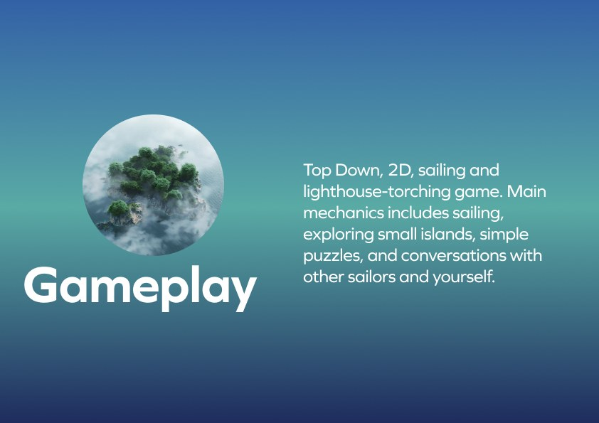
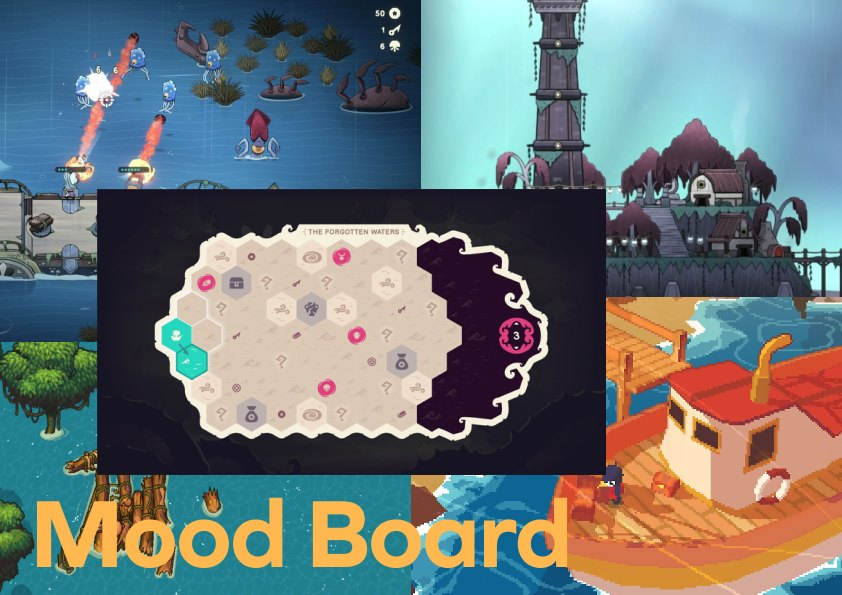
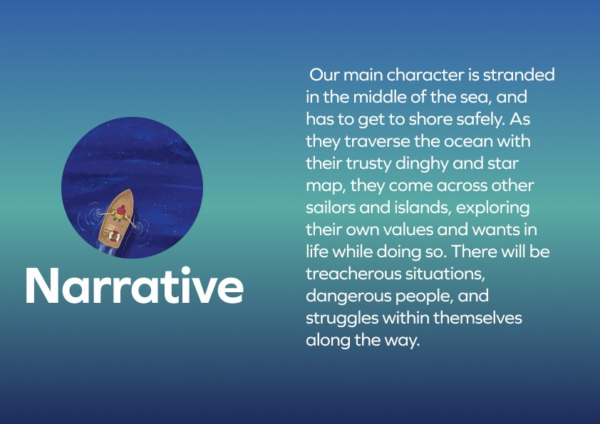
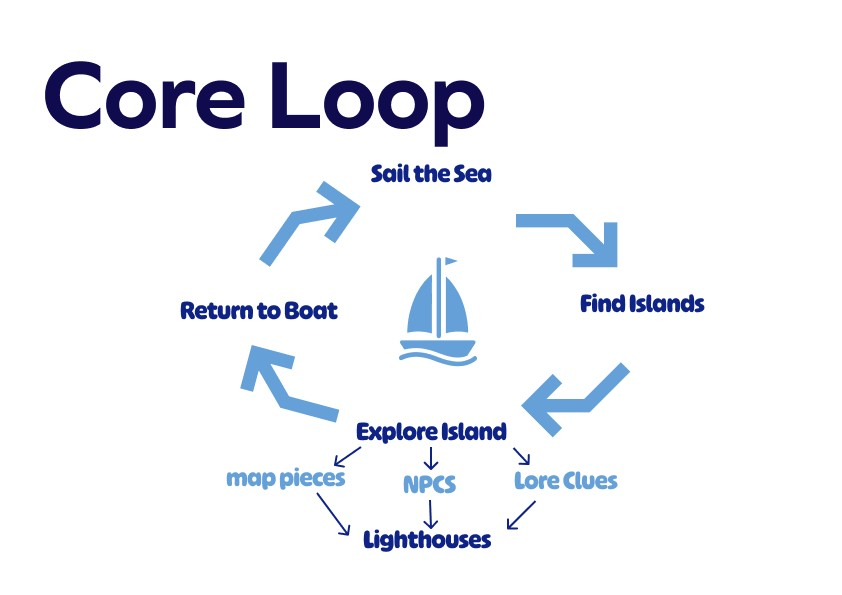
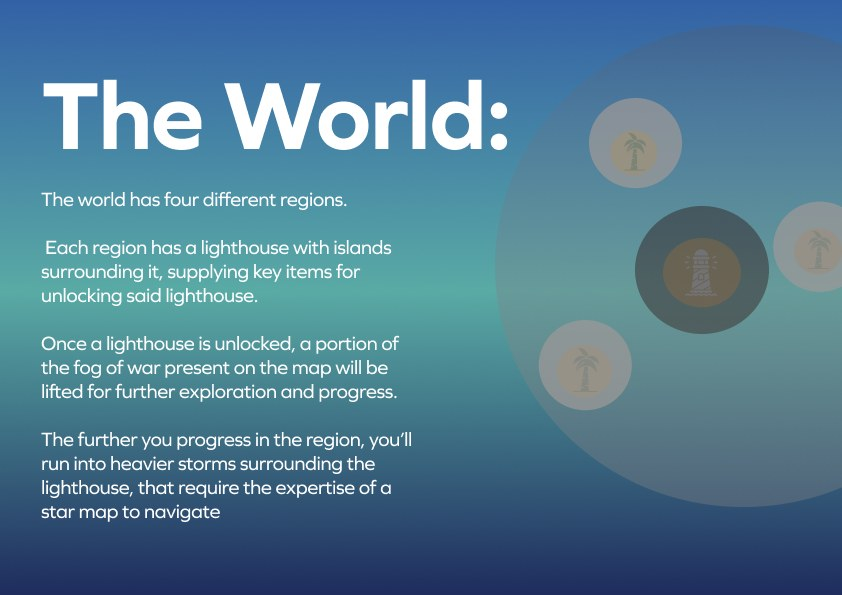
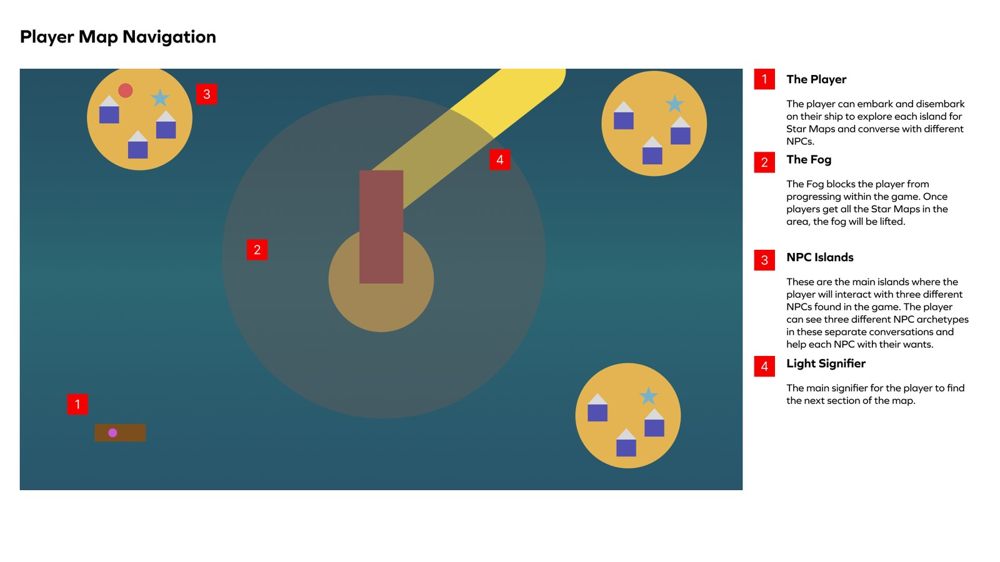
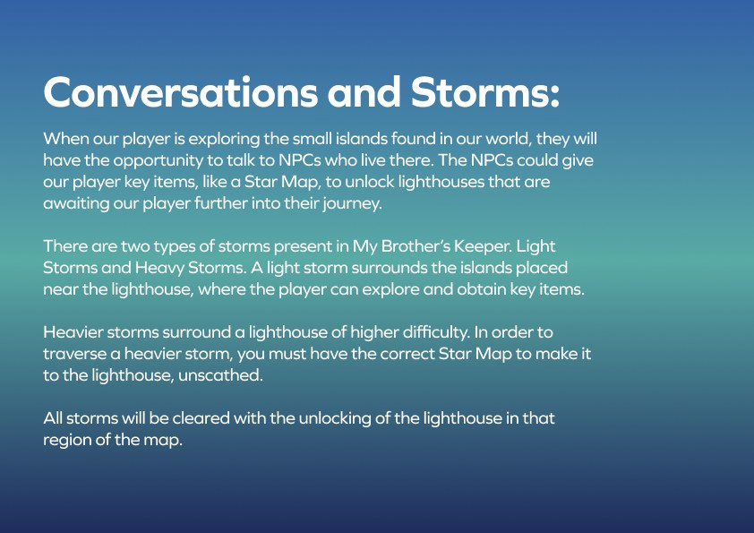
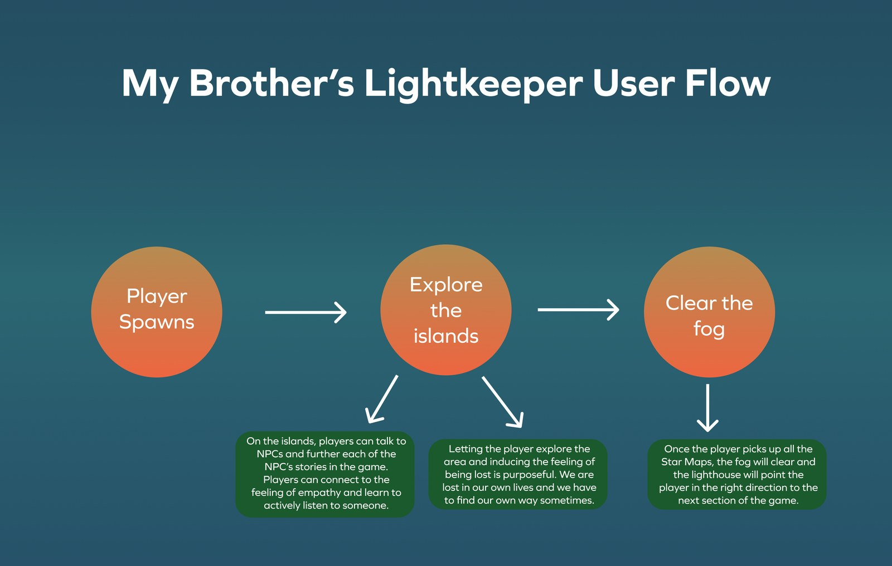

A top-down 2D "lighthouse-lighting spiritual exodus" about finding your way by lighting the path for others. I was the sole designer, producer, and one of its artists — and built it alongside Eldritch Confection with a single engineer.
My Brother's Lightkeeper is a top-down 2D sailing game with a spiritual heart. You play a sailor stranded at sea with a dinghy and a star map, trying to reach shore — crossing other sailors and islands, lighting the lighthouses that open the way forward, and quietly working through your own values and wants along the way.
The mechanics are gentle on purpose: sailing, exploring small islands, simple puzzles, and conversations with other seafarers and, honestly, with yourself. Its whole idea is that keeping your own light burning can guide someone else home.

I owned the whole game — every system, the art direction, the production, and some of the art itself.
I was the sole designer on Lightkeeper: the sailing feel, the dialog and progression, the systems, and the way the regions, map fragments, and lighthouses fit into one journey. I set the art direction with a mood board so the look stayed cohesive, produced the project, and got my hands dirty on the craft too — some of the character pixel art and some of the island design.
It was just the two of us — me and my engineer, Kobe Riddle — building it in GameMaker over about two months for an alternative-game-development course at the University of Utah. And I was making it at the same time as Eldritch Confection, so a real part of the job was protecting scope and keeping two games moving at once without either one stalling.

With a team of two, a two-month deadline, and a second game running in parallel, the hard part wasn't building a sailing game — it was making players feel something with it. The story is about being lost and finding your way by helping others, and a game about calm and care can't play fiddly or frustrating.
So every system had to stay small, legible, and true to that feeling — no wasted mechanic, nothing that broke the mood.

The loop is calm and clear: sail the sea, find islands, explore them for map pieces, NPCs, and lore, light the lighthouses, and return to your boat to do it again. Each step feeds the next, so progress always feels like it's yours.

The world is four regions, each built around a lighthouse ringed by islands that hold the key items to unlock it. Lighting a lighthouse lifts that region's fog of war and opens the way onward — and the deeper you sail, the heavier the storms get.

I mapped how players read the sea: the fog blocks progress until you've gathered a region's star maps, NPC islands are where you meet and help three different characters, and the lighthouse's beam is the signifier that always points to where you go next.

Two systems carry the tension and the heart. Storms gate the world — light storms you can explore for key items, heavy storms you can only cross with the right star map. Conversations are the reward: NPCs hand you those star maps, and helping them matters as much as lighting the next lighthouse.

The flow ties every mechanic back to the meaning. Being lost is purposeful — you're meant to feel adrift, because we all are sometimes — and finding your way happens through empathy: listening to other sailors, helping them, and clearing your own fog one star map at a time.

Being lost is the point — you find your way the way you do in real life: one light, one conversation at a time.
My Brother's Lightkeeper shipped free on itch.io — a complete, four-region game made by two people in GameMaker, for an alternative-game-development course at the University of Utah.
What I took from it: I can own an entire game — narrative, systems, art direction, production, and some of the art — and still keep it small enough to actually finish. Making it right next to Eldritch taught me how to protect scope and hold a clear creative intent when both time and hands are scarce.